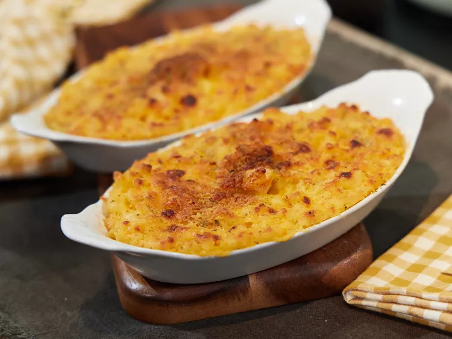

Phyllis’s Homemade Baked Mac & Cheese Recipe

PHOTO CREDIT: PHYLLIS
Description
Phyllis’s Homemade Baked Mac & Cheese is the ultimate comfort dish, combining a rich, creamy stovetop cheese sauce with classic elbow macaroni, finished in the oven with a golden layer of Cheddar and optional seasoned breadcrumbs. This recipe starts with a smooth cheese sauce, made by blending melted butter, milk, and flour with extra-sharp yellow Cheddar and sharp Cheddar cheese, creating a deeply flavorful base. The cooked macaroni is tossed in this sauce, seasoned to taste, and poured into a casserole dish for baking. Topped with even more shredded Cheddar and optional breadcrumbs, it bakes to perfection, yielding a satisfying, bubbling masterpiece.
For a twist on this classic dish, Phyllis includes an optional Shrimp Mac & Cheese variation, adding a savory, slightly briny flavor that takes this recipe to a new level. Lightly sautéed shrimp are incorporated into the mac and cheese mixture before baking, with extra shrimp reserved to adorn the top. With or without shrimp, Phyllis's baked mac and cheese promises an irresistibly rich and gooey experience, perfect for family gatherings or weeknight indulgences.
Ingredients
- 4 tablespoons butter, divided
- 2 cups whole milk, or as needed
- 3 tablespoons all-purpose flour
- 24 ounces extra-sharp yellow Cheddar cheese, cubed
- 16 ounces sharp Cheddar cheese, cubed
- 2 pounds elbow macaroni
- 2 large eggs, beaten
- Salt and freshly ground black pepper, to taste
- 2 pounds shredded sharp Cheddar cheese
- 1/2 cup seasoned breadcrumbs (optional)
Steps
- Preheat the oven to 350°F (175°C). Grease a large casserole dish.
- Melt 2 tablespoons of butter in a saucepan over medium heat. Add the milk and bring to a simmer, then reduce heat to low.
- Mix the flour with 2 to 3 tablespoons of water until smooth, then add it to the saucepan, stirring constantly until the sauce thickens.
- Add the cubed extra-sharp Cheddar and sharp Cheddar to the sauce, stirring until the cheese melts. Remove from heat.
- Meanwhile, bring a large pot of salted water to a boil and cook the elbow macaroni until al dente (about 8 minutes or as per package instructions). Drain and set aside.
- Melt the remaining 2 tablespoons of butter in a microwave-safe bowl on High for about 10 seconds.
- In a large bowl, combine the cooked macaroni, melted butter, and beaten eggs. Stir in the cheese sauce, adding a little more milk if the sauce is too thick. Season with salt and pepper.
- Pour the macaroni and cheese mixture into the prepared casserole dish. Top with shredded Cheddar cheese and seasoned breadcrumbs, if desired.
- Bake in the preheated oven until golden-brown and bubbling, 35 to 45 minutes.